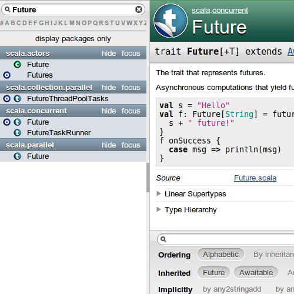

Scala Puzzlers

Object-oriented and functional
“A drunken Martin Odersky sees a Reese's Peanut Butter Cup ad featuring somebody's peanut butter getting on somebody else's chocolate and has an idea.
He creates Scala, a language that unifies constructs from both object oriented and functional languages. This pisses off both groups and each promptly declares jihad.” ¹
¹ A Brief, Incomplete, and Mostly Wrong History of Programming Languages
Statically typed with local type inference
Class/trait-based inheritance and subtyping
First-class functions/lambdas/methods
Joe Armstrong (creator of Erlang):
We'll focus on 2. and 3. today.
Simplest solution which works consistently
(and still takes all known issues into account)?
Works for all types which define apply or update!
… because readability is not optional!
. and ()
Floating-point-literal-without-digit-after-dot
Floating-point-literal-without-digit-after-dot
(deprecated in 2.10)
Octal numeric literal
Octal escape literal
Octal numeric literal (deprecated in 2.10)
Octal escape literal (deprecated in 2.11)




scala.mobile
scala.text
scala.util.regex.automata
Unit (~ void)
foo …

() Insertion
You know you need string interpolation,
when people start using XML literals as a replacement!
Extensible by design
Example: formatting interpolator
<% syntax deprecated in 2.11
Types, members and packages from these
scopes are available without import:
scala.Predefscala._java.lang._java.langjava.langUseless types:
Compiler, Enum, Number, Object, Void, ...
Shadowed types:
Boolean, Byte, Double, Float, Long, ...
java.langNot importing java.lang._ by default:
Int to Float, Long to Float, Long to Double)Current options in Scala:
scala.Enumerationsealed trait + objects patternscala.Enumeration
scala.Enumerationtrait/object pattern
trait/object pattern
@enum macro
@enum macroscala.EnumerationFuture options in Scala:
scala.Enumerationsealed trait + objects@enum
Native support for unions and intersection types in DOT, the formalization of Scala's next typesystem
Stay tuned!
Code/Features/Libraries need time to mature!
Example: Scala Macros
Example: Modularization

Source or binary compatibility? Both?
Scala:

Requires modification of:
remove takes two arguments
CompositeThrowable
CompositeThrowableSounds reasonable, but ...
completely non-deterministic exception handling!
:
/